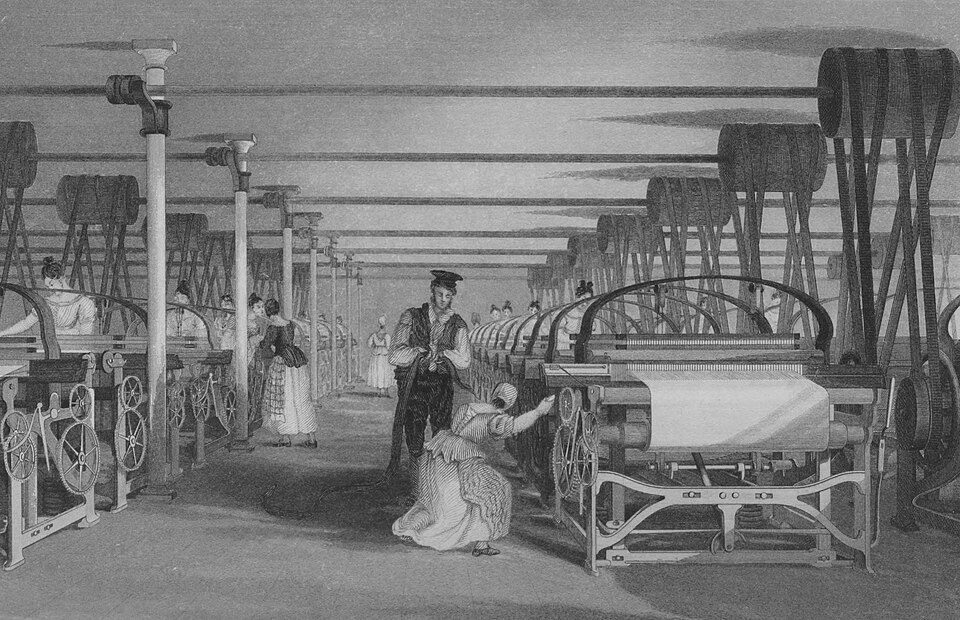
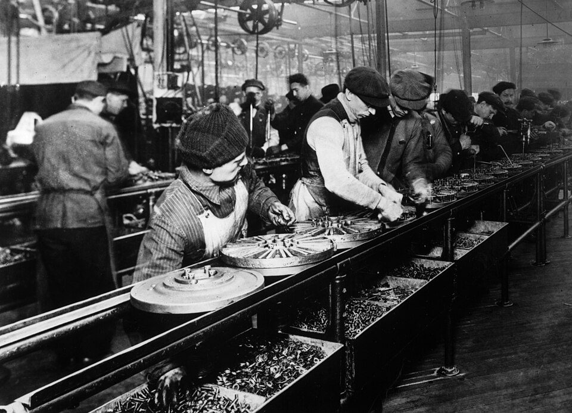
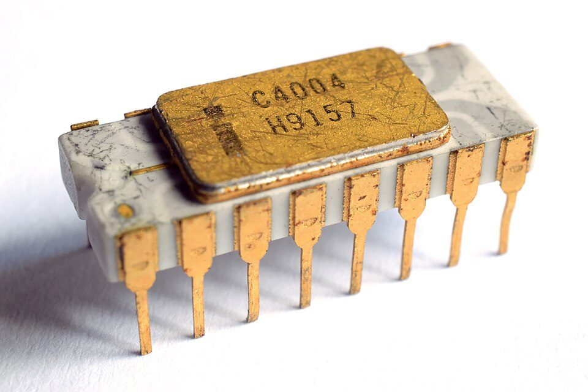
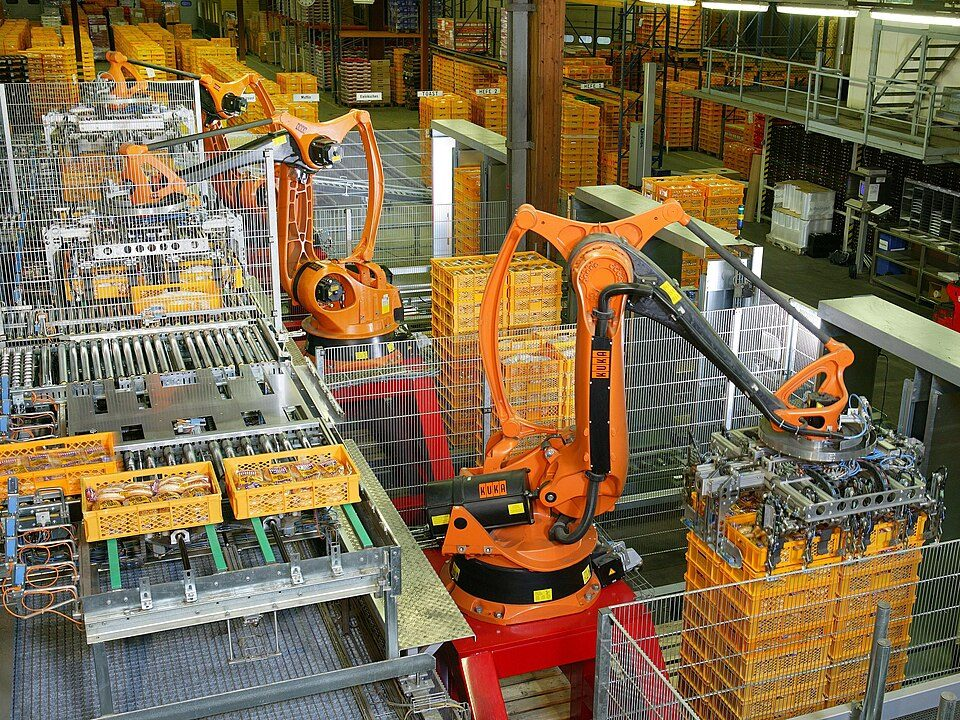
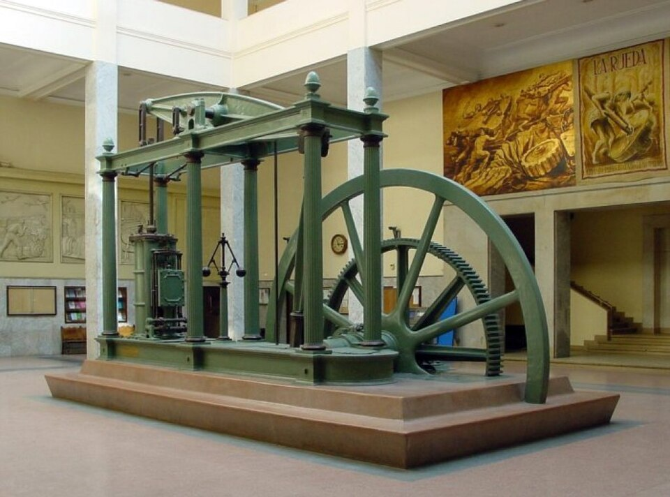

¿Qué es la tecnología?
Antes de dibujar, programar o construir nada, conviene saber de qué estamos hablando. Esta sesión responde a una pregunta que parece fácil y no lo es.
Sin mirar el móvil: escribe en 60 segundos cinco objetos que hayas usado hoy antes de entrar en clase. Ahora táchalos todos menos uno, el que más te costaría vivir sin él.
¿Lo tienes? Pues alguien tuvo que inventarlo, alguien tuvo que aprender a fabricarlo y alguien tuvo que averiguar por qué funciona. Esas tres cosas son distintas, y hoy vamos a separarlas.
Empecemos por una pregunta tonta
Cuenta cuántos objetos has usado hoy desde que has abierto los ojos hasta llegar a clase. La alarma, la luz, el grifo, la ropa, el desayuno envasado, el autobús, la mochila, el boli. Ninguno de esos objetos existe en la naturaleza. Todos los ha fabricado alguien para resolver un problema que alguien tenía.
Eso es la tecnología: no los aparatos, sino la forma de resolver problemas fabricando cosas.
Tecnología es el conjunto de conocimientos, técnicas y herramientas que usamos para crear objetos y sistemas que resuelven necesidades de las personas.
Técnica, tecnología y ciencia no son lo mismo
Se confunden mucho, y en el examen se pregunta. La diferencia está en qué responde cada una:
- La técnica responde a cómo se hace. Es la habilidad de hacer algo bien: soldar, serrar recto, hacer pan. Se aprende practicando y se transmite imitando. No necesita saber por qué funciona.
- La ciencia responde a por qué ocurre. Busca explicar la naturaleza. No pretende fabricar nada: quiere entender.
- La tecnología responde a cómo resuelvo este problema. Coge lo que sabe la ciencia y lo que sabe hacer la técnica y lo junta para crear una solución.
La tecnología siempre empieza por una necesidad
Nadie inventa por inventar. Detrás de cada objeto hay alguien que tenía un problema:
- Aparece una necesidad —tengo frío, no llego, no puedo cortar esto—.
- Se busca una solución con lo que se sabe y con los materiales que hay.
- Se fabrica y se prueba.
- Si funciona, se mejora y se enseña a otros. Si no, se cambia.
Ese bucle lleva funcionando dos millones y medio de años, y es exactamente lo que vas a hacer tú este curso en cada proyecto.
Y la digitalización, ¿qué es?
La asignatura se llama Tecnología y Digitalización, así que conviene aclarar la segunda mitad. Y de entrada, un aviso: digitalización no significa «usar ordenadores».
Digitalizar es convertir información en números para que una máquina pueda guardarla, copiarla, enviarla y transformarla. Digitalización, en sentido amplio, es lo que le pasa a una sociedad entera cuando casi toda su información y casi todos sus procesos funcionan así.
Se entiende mejor con un disco. Un vinilo guarda la música como un surco físico: cada copia del surco pierde un poco de calidad, y si se raya, se estropeó para siempre. Un archivo de música guarda esa misma canción como una lista de números. Y los números se copian exactos, infinitas veces, sin perder nada y casi sin coste. Ahí está toda la diferencia.
Qué hay dentro de cada uno
Los dos guardan la misma canción. Pero si te acercas con una lupa, lo que encuentras no se parece en nada.
Escúchalo
La misma melodía, guardada de las dos maneras. Dale a copiar varias veces y vuelve a escuchar las dos: ahí está toda la diferencia.
Cuando eso mismo le ocurre a las fotos, a los libros, al dinero, a las clases, a los planos y a las máquinas de una fábrica, cambian tres cosas de golpe:
- Copiar deja de costar. Mandar un archivo a mil personas cuesta lo mismo que mandarlo a una.
- La distancia deja de importar. Un plano llega a Alemania en un segundo.
- Las máquinas pueden trabajar con esa información. Un archivo se puede buscar, medir, corregir solo y mandar directamente a una impresora 3D para que lo fabrique.
Por eso la asignatura junta las dos palabras: la digitalización es la tecnología de nuestra época, igual que la máquina de vapor lo fue del siglo XIX. Y como con cualquier tecnología, aquí no basta con saber usarla: hay que entender cómo funciona por dentro y decidir qué queremos hacer con ella.
Dos millones y medio de años en una línea. Pulsa cada hito para ver qué cambió. Fíjate en una cosa mientras avanzas: las distancias entre hitos se acortan.
Este navegador no puede leer el texto en voz alta. El contenido está escrito arriba.
Las cuatro revoluciones industriales
Cuatro momentos en que cambió la forma de fabricar, y con ella el mundo entero. Fíjate en quién hace el trabajo en cada foto.




Veámoslo en tres minutos
El vídeo no se carga hasta que lo pulsas, y se reproduce sin cookies de seguimiento. Si no se ve aquí —porque la red del centro bloquee YouTube o porque ese vídeo no se deje empotrar—, ábrelo directamente aquí. El vídeo es de su autor y no forma parte del material publicado bajo la licencia de esta página.
La máquina que lo empezó todo
De todos los hitos de la línea, ninguno cambió tanto en tan poco tiempo. Merece una mirada de cerca.


Qué hay que hacer
- Elige un objeto que hayas usado hoy. Cualquiera, cuanto más tonto mejor: una cuchara, una cremallera, un boli.
- Escribe qué necesidad resuelve. En una frase.
- Explica cómo se resolvía esa misma necesidad hace 200 años. Y hace 2.000.
- Di qué técnica hace falta para fabricarlo y qué ciencia hay detrás.
- Termina con una predicción: ¿cómo crees que será dentro de 50 años?
Cómo se evalúa
- La necesidad está bien identificada y no se confunde con el objeto (3 puntos).
- La comparación histórica es correcta y concreta (3 puntos).
- Distingue bien técnica de ciencia (3 puntos).
- La predicción está razonada, no es una ocurrencia (1 punto).
Ticket de salida. Responde primero en el cuaderno; después despliega y comprueba.
- Un carpintero que hace sillas preciosas pero no sabe explicar por qué la madera se comba, ¿tiene técnica, ciencia o tecnología?
Ver respuesta
Técnica. Sabe hacerlo muy bien, que es justo lo que define a la técnica. Le falta la explicación, que sería la ciencia.
- ¿Cuál dirías que fue la primera tecnología de la historia?
Ver respuesta
La piedra tallada, hace unos 2,6 millones de años. Es la primera vez que se fabrica una herramienta a propósito en vez de usar lo que se encuentra.
- Di una cosa buena y una mala que haya traído internet.
Ver respuesta
Respuesta abierta. Buena: acceso al conocimiento desde cualquier sitio. Mala: bulos, adicción o que quien no tiene conexión se queda fuera de todo. Lo importante es que veas que casi toda tecnología trae las dos cosas a la vez.
Licencia y uso
Tema 0 · ¿Qué es la tecnología? · © 2026 Roberto P. García Llorente, Profesor de Tecnología en Educación Secundaria.
Publicado bajo Creative Commons Reconocimiento-CompartirIgual 4.0 Internacional. Puedes copiarlo, adaptarlo y redistribuirlo, incluso con fines comerciales, siempre que cites la autoría, indiques si lo has modificado y publiques tus versiones derivadas con esta misma licencia.
Cómo citar
Roberto P. García Llorente (2026). Tema 0 · ¿Qué es la tecnología?. https://rgllorente82-png.github.io/robertotecnologia/2eso/TyD/tema0/. Bajo licencia CC BY-SA 4.0.
Qué cubre
Los textos, los dibujos y el código de esta página, que son obra propia.
No cubre las fotografías, que proceden de Wikimedia Commons y conservan su propia licencia, indicada bajo cada una. Algunas son de dominio público; las demás están bajo licencias Creative Commons compatibles con esta, y se reproducen citando autoría y licencia como exigen. Tampoco cubre las tipografías, de Google Fonts con su propia licencia.
Otros usos
Para usos que excedan la licencia, abre una incidencia en el repositorio del proyecto.